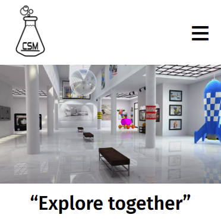
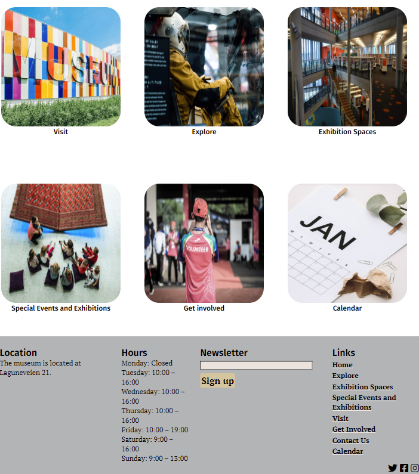
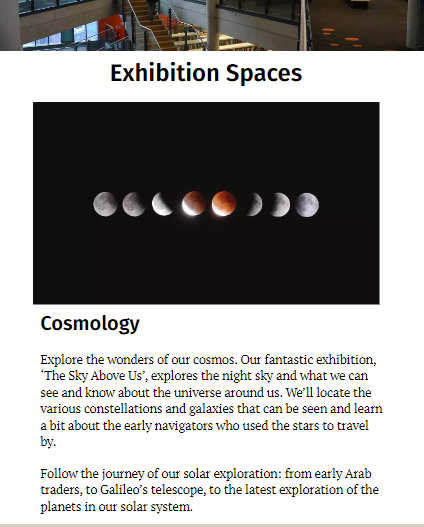
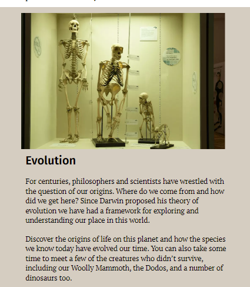
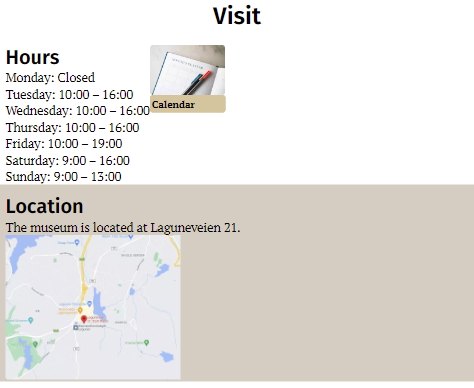
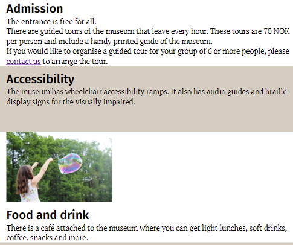

COMMUNITY SCIENCE MUSEUM
Community Science Museum var en oppgave vi fikk. Der vi skulle produsere en nettside for et museum. Med allerede utvalgte bilder og tekst. Dette var forsiden min på mobilversjon.

PROSESSEN
Prosessen for denne oppgaven var fin og uten problemer. Jeg jobbet etter en plan jeg hadde laget i trello og holdte med innen satte frister.
På dette bildet viser jeg til hvordan jeg hadde løst det med å komme seg til de forskjellige sidene.
På dette bildet viser jeg til hvordan jeg hadde løst det med å komme seg til de forskjellige sidene.


TEKNOLOGI
I denne oppgaven brukte jeg kun HTML og CSS for å produsere nettsiden. Dette var siden oppgaven kun skulle lages ved hjelp av de teknologiene og intet mer.
Disse bildene er hentet fra Exhibtion spaces siden, i etterkant ser jeg masse jeg kunne gjort bedre på bare denne siden.
Disse bildene er hentet fra Exhibtion spaces siden, i etterkant ser jeg masse jeg kunne gjort bedre på bare denne siden.


LÆRING
Det jeg lærte av denne oppgaven var egentlig, at jeg ble bedre i HTML og CSS. Men kan alltid bli enda bedre.
Hvis det er noe jeg ville gjort annerledes i denne oppgaven. Så ville det nok vært å endre en god del på farger og design.
De bildene som er lagt ved her viser til Visitsiden min. Her vil jeg ikke si at jeg gjorde noe dårlig, bare at jeg kunne gjort ting bedre. Som for eksempel endring av farger og design/plassering.
Hvis det er noe jeg ville gjort annerledes i denne oppgaven. Så ville det nok vært å endre en god del på farger og design.
De bildene som er lagt ved her viser til Visitsiden min. Her vil jeg ikke si at jeg gjorde noe dårlig, bare at jeg kunne gjort ting bedre. Som for eksempel endring av farger og design/plassering.